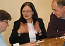
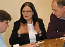

The conference for participants
SPA2008 bring together experts and practitioners across a variety of industries, from around the world, to share the latest thinking in software development. At SPA we don’t simply follow the latest fads we help you identify the real advances that will enable you to build better software.
Mar 16-19, 2008, Bedfordshire, England
SPA2008 will provide you with a unique high-energy learning experience. This is the conference for software professionals seeking the latest practices in software development. You will have the opportunity to explore a broad range of topics that are pioneering software development and deployment practices and hear about the latest ideas in software management techniques to help you better manage your projects and teams.
SPA2008 is about learning through interaction. At SPA2008 you will engage, critically evaluate and draw insights which you will take away and use each and every day. You will find that these are four days well spent. You'll participate in sessions which address real issues, not the latest fads. The sessions are interactive, educational and fun. You will be doing, not just listening. You can try out new techniques, share experiences and work towards the common goal of software practice advancement. Your participation is the key. You don't need to know the answers to join in, you just need the enthusiasm.
SPA2008 is the annual conference of the BCS Software Practice Advancement Specialist Group, and is one of the UK's foremost software events. SPA2008 continues the 16-year tradition of the world-famous high quality SPA conferences.
Whether you're interested in the latest technology, pioneering development practices or innovative project management techniques SPA2008 has something valuable to offer you.
SPA2008 is sponsored by: